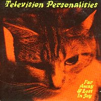

Television Personalities |
 1994 - Vinyl Japan - TASK28/CD28 - 12"/CD Songs: I Don't Want To Live This Life Far Away And Lost In Joy Do You Know What They're Saying About Me Now? I Get Frightened Recorded At Toe Rag Studios, London EC1. Produced By Liam Watson. All songs written & performed by Dan Treacy. All songs are previously unreleased. Warholery by Nick Garrard at Technimedia. |